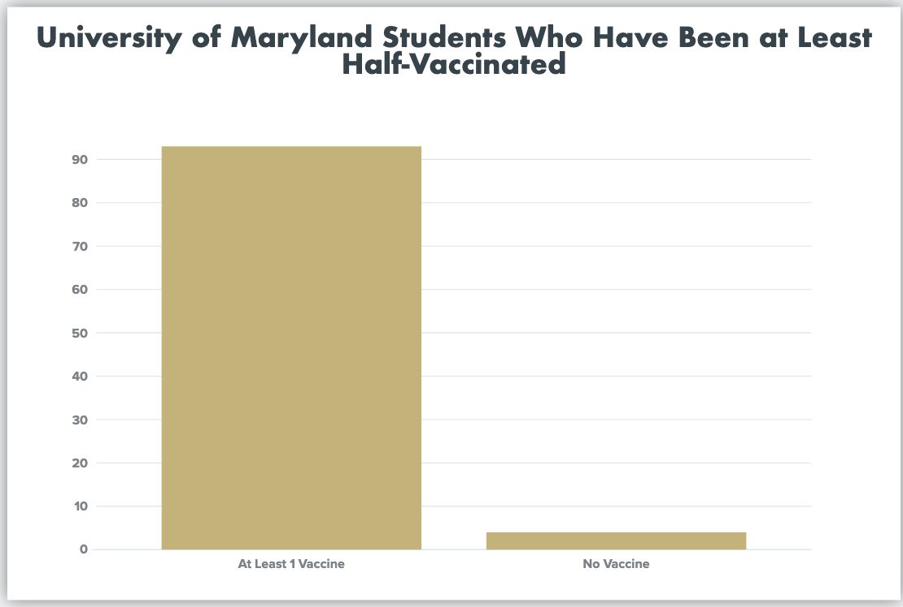
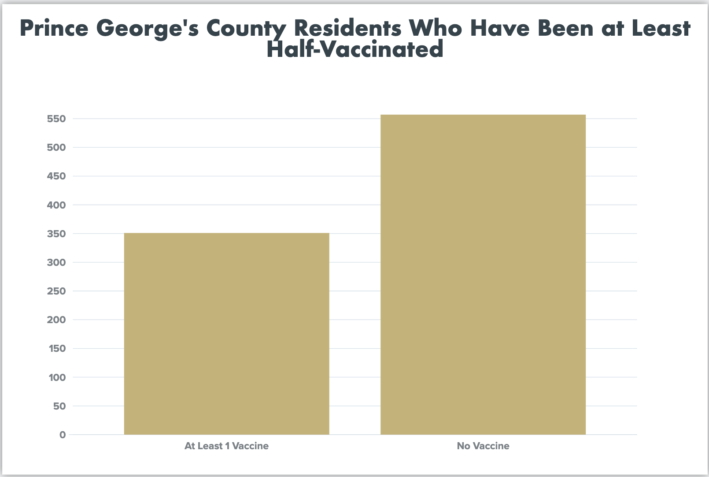

In the recent months, places all over Maryland have become accessible for those eligible to get the vaccine. People have been able to go to supermarkets, pharmacies, and mass vaccination sites in order to get what they hope will return them to normal.
The state of Maryland has also been working diligently to get as many people vaccinated as quickly as possible. Governor Larry Hogan has assured the people of Maryland that he will use every resource he can to speed the process along.
“We are pleased to announce another acceleration of vaccine eligibility phases much earlier than we anticipated,” said Hogan in a Maryland government press release. “Getting more people vaccinated as quickly as we possibly can is our absolute best defense against these variants, and it is the best way to win the long war against this deadly virus.”
The University of Maryland has also made great strides in helping to allocate vaccines by encouraging students to get vaccinated. The school has set up appointments for students to get their shots by providing locations on campus.
UMD Data

Prince George's County Data

“It was super easy to get the vaccine,” said Zoe Rosenberg, a junior at UMD. “I literally signed up my friends when I saw there were appointments. I am excited to finally start returning to normal!”
The university has also mandated that all students and faculty must be vaccinated for the 2021-2022 school year if they want to come onto campus. However, people with medical conditions and religious observances will be excused from needing to get the vaccine.
“Of course, we’ll comply with all federal and state laws in granting appropriate exemptions for medical or religious reasons,” said USM Chancellor Jay A. Perman.
The decision to mandate the vaccine came from the University System of Maryland. The announcement stated that, “All eligible students, faculty, and staff who will be on University System of Maryland campuses this fall, including UMD, are required to be vaccinated against COVID.”
The state of Maryland is currently in its third phase, which means that all Marylanders who are 16 and older are eligible for the vaccine. As of April 27, 2020, 1,906,800 have been fully vaccinated. About 31% of Maryland citizens have received either both shots of the Pfizer or Modern vaccine, or one shot of the Johnson and Johnson vaccine.
There have been many cases of Covid-19 during the entirety of the current school year. The university has worked to keep numbers down by enforcing social distancing, only having single-person rooms in university housing, and minimizing on-campus events. The week of April 18, 2021 to April 24, 2021, there have been 15 confirmed cases by the university.